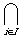

A space X is connected if the only subsets of X which are both open and closed (= clopen) are
 and X.
and X.
| Previous page (Separation axioms) | Contents | Next page (Pathwise connectedness) |
One way of distinguishing between different topological spaces is to look at the way thay "split up into pieces".
To make this idea rigorous we need the idea of connectedness.
Definition
A space which is a union of two disjoint non-empty open sets is called disconnected.
Equivalently
A space X is connected if the only subsets of X which are both open and closed (= clopen) are and X.
Proof of equivalence
If X = A  B with A and B open and disjoint, then X - A = B and so B is the complement of an open set and hence is closed. Similarly, B is clopen.
B with A and B open and disjoint, then X - A = B and so B is the complement of an open set and hence is closed. Similarly, B is clopen.
Conversely, if A is a non-empty, proper open subset then A and X - A disconnect X.

A subset of a topological space is called connected if it is connected in the subspace topology.
Example
The set [0, 1] [2, 3]  R with its usual topology is not connected since the sets [0, 1] and [2, 3] are both open in the subspace topology.
R with its usual topology is not connected since the sets [0, 1] and [2, 3] are both open in the subspace topology.
Theorem
The interval (0, 1) R with its usual topology is connected.
Proof
Suppose that (0, 1) = A B with A, B disjoint non-empty clopen subsets. Choose a  A and b B with (say) a < b.
A and b B with (say) a < b.
Then let  be the least upper bound of the set C = { ([a, b]
be the least upper bound of the set C = { ([a, b]  A }. This least upper bound exists by the standard properties of R.
A }. This least upper bound exists by the standard properties of R.
Since C is a closed subset it contains its limit points and so C and hence is in A. Since A is open has an  -neighbouhood lying inside A and so unless = b it would not be an upper bound of C. But = b contradicts the fact that b B = (0, 1) - A.
-neighbouhood lying inside A and so unless = b it would not be an upper bound of C. But = b contradicts the fact that b B = (0, 1) - A.
A similar proof shows that any interval is a connected subset of R. In fact, we have:
Theorem
Intervals are the only connected subsets of R with the usual topology.
Proof
If A R is not an interval, then choose x R - A which is not a bound of A.
Then the subsets A (- , x) and A (x, ) are open subsets in the subspace topology A which would disconnect A and we would have a contradiction.
, x) and A (x, ) are open subsets in the subspace topology A which would disconnect A and we would have a contradiction.
The most important property of connectedness is how it affected by continuous functions.
Theorem
The continuous image of a connected space is connected.
Proof
If f: X  Y is continuous and f(X) Y is disconnected by open sets U, V in the subspace topology on f(X) then the open sets f -1(U) and f -1(V) would disconnect X.
Y is continuous and f(X) Y is disconnected by open sets U, V in the subspace topology on f(X) then the open sets f -1(U) and f -1(V) would disconnect X.
Corollary
Connectedness is preserved by homeomorphism.
We may use this fact to distinguish between some non-homeomorphic spaces.
Example
The spaces [0, 1] and (0, 1) (both with the subspace topology as subsets of R) are not homeomorphic.
Proof
Removing any point from (0, 1) gives a non-connected space, whereas removing an end-point from [0, 1] still leaves an interval which is connected.
A similar method may be used to distinguish between the non-homeomorphic spaces obtained by thinking of the letters of the alphabet as in Exercises 1 question 1.
Corollary (The Intermediate Value Theorem)
If f: R R is continuous then for any a, b in R, f attains any value between f(a) and f(b) at some point between a and b.
Proof
Since the interval [a, b] is connected, so is its image f([a, b]) and so this too is an interval.
Remark
A similar result holds for a continuous real-valued function on any connected space.
Fastening together connected space "with an overlap" gives a conected space:
Theorem
If A and B are connected and A B  then A B is connected.
then A B is connected.
Proof
Suppose open sets U and V disconnect A B. Then A U and A B would disconnect A and so one of them is . So suppose A U.
Similarly we have either B V or B U. Since B meets A the first of these is imposssible and so we have A B U and V = .
In fact if {Ai| i I} is any set of connected subsets with  Ai then  Ai is connected.
Ai is connected.
Definition
The maximal connected subsets of a space are called its components.
Note that every point of a space lies in a unique component and that this is the union of all the connected sets containing the point (This is connected by the last theorem.)
Examples
[2, 3] with the subspace topology inherited from R, are the subspaces [0, 1] and [2, 3].
Proof
If r < s are rationals, choose an irrational x between them. Then Q (-, x) and Q (x, ) disconnect Q and so r, s are in different components.
| Previous page (Separation axioms) | Contents | Next page (Pathwise connectedness) |